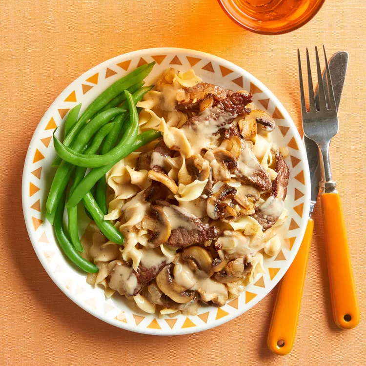

Best Beef Stroganoff Recipe
Beef Stroganoff

Description
Beef Stroganoff makes a seriously delicious weeknight meal. "Great quick supper," says home cook marykins. "Lends itself to ingredients on hand!"
The most amazing Beef Stroganoff you will ever have. This Beef Stroganoff recipe is an easy 30 minute recipe.
Never suffer through dry chewy beef or bland Stroganoff sauce again – this recipe delivers!!
Ingredients:
- 4 tablespoons butter, divided.
- 6 ounces fresh mushrooms, sliced.
- 1 medium onion, chopped.
- 1 (12 ounce) package egg noodles.
- 2 pounds lean ground beef.
- ¼ cup all-purpose flour.
- 2 cups beef broth.
- 1 cup sour cream.
- salt and black pepper to taste.
Steps
- Gather all ingredients.
- Melt 2 tablespoons butter in a large skillet over medium heat. Add mushrooms and onion; cook and stir until soft, about 5 minutes.
- Fill a large pot with lightly salted water and bring to a rapid boil. Cook egg noodles at a boil until tender yet firm to the bite, 7 to 9 minutes.
- While the noodles are cooking, melt remaining 2 tablespoons butter in the skillet over medium heat.
- Mix in flour and cook for 1 minute.
- Add mushroom mixture, then stir in sour cream, salt, and pepper. Cook, stirring occasionally until sauce is hot, 2 to 3 minutes; do not boil.